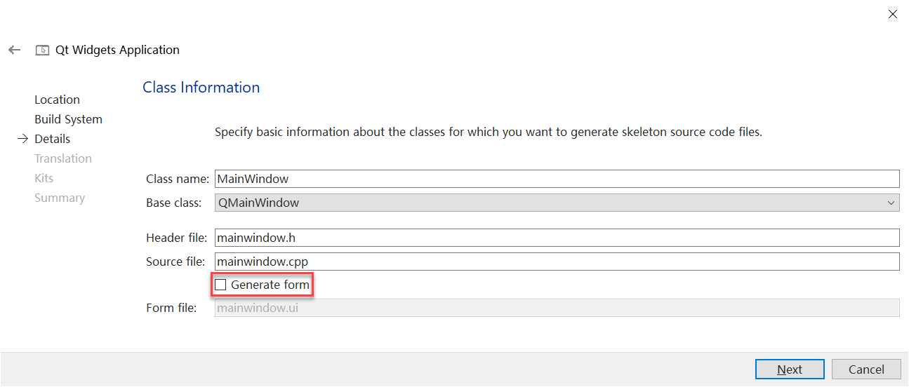
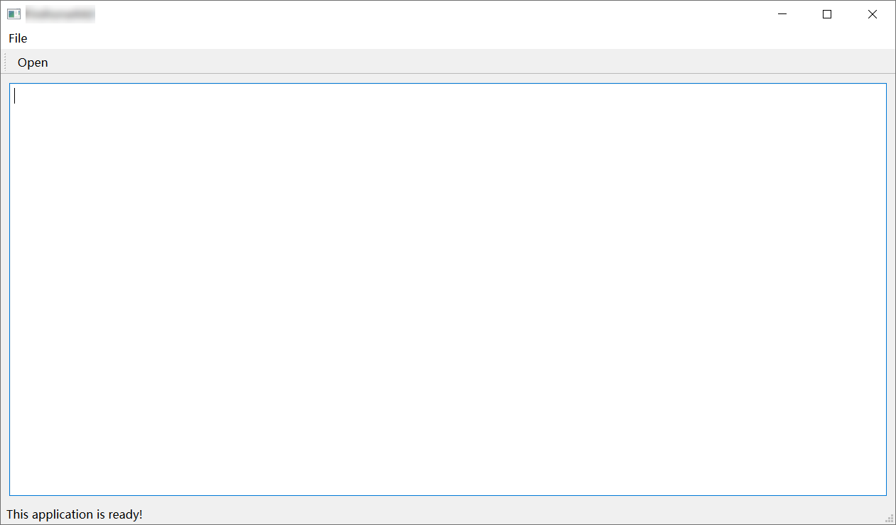

手把手带你编写 Qt 应用主窗体

本文简单记录一下在不使用 Qt Designer 生成 .ui 文件的情况下，手写一个主窗体的基本流程，包括：创建项目 🠚 添加 Central Widget 🠚 设置布局 🠚 添加主作业区控件 🠚 添加菜单 🠚 添加工具蓝 🠚 添加状态栏。 这个过程对 初学者帮助 很大，是学习和使用 Qt 的一个极好入门形式。首先介绍一下我们要创建的主窗体的“结构”：
- 界面结构树（逻辑组织结构）
1 | QMainWindow ( mainWindow ) |
这是窗体上所有控件和布局按实际代码排布出的结构，这种结构应该有一个专有名词，但是很遗憾大家的叫法并不统一，本文我们会使用“界面结构树”来指代。与此同时，各个控件在创建时还会设置自己的 parent，从而形成一个“对象树”，这在 Qt 里是有确切定义的。对应上面的界面结构树，我们将要创建的对象树如下：
- 对象树（控件生命周期管理关系）
1 | QMainWindow ( mainWindow ) |
至于为什么会存在这两种树以及它们之间有什么区别和联系，我们在 《解读 Qt “对象树”和“界面结构树”的底层逻辑》 一文作了专题介绍。下面就开始实际的代码编写了。
1. 创建项目
使用 Qt Creator 创建 Qt Widgets Application，记得在向导中取消勾选“生成 UI 文件”，同时在选择构建工具时选择 CMake，这样方便后续使用其他 IDE 继续编写项目。项目生成后，可以按照 C++ 项目的默认规范创建 incluce 和 src 文件夹 ，然后将自动生成的文件移动到对应的文件夹中。建议使用 CLion 来进行此步操作，它会自动重构 CMakeLists.txt 文件，不需要我们手动修改。

2. 添加 Central Widget（作为布局的容器）
选择不自动生成 UI 文件的话，项目的初始代码是非常简洁的，除了主窗体的类和声明外，几乎没有任何内容，因此，第一件事是：添加centralWidget。centralWidget 是一个 plain QWidget，没有任何显示任务和逻辑，它唯一作用就是：我们想把窗体中心部分的布局设置为垂直布局，但布局必须依附于一个 QWidget，因此需要先添加一个 centralWidget，把它的布局设为垂直布局，关于这里的详细解释，可以参考<>。以下是具体代码，在头文件中添加：
1 | private: |
在主窗体的构造函数中添加：
1 | // 添加 Central Widget |
3. 设置布局（设置 Central Widget 的 Layout）
如前所述，我们想要的窗体中心部分的布局必须“挂靠”到 Central Widget 上的，所以我们创建出需要的 Layout 后 set 给 centralWidget 就可以实现了。在头文件中添加：
1 | private: |
在主窗体的构造函数中添加：
1 | // 设置布局 |
4. 添加一个主控件
在头文件中添加：
1 | private: |
在主窗体的构造函数中添加：
1 | // 添加一个主控件 |
5. 添加菜单
添加一个具备点击事件响应能力的菜单项需要依次完成：添加菜单栏 🠚 添加菜单 🠚 添加菜单项 🠚 关联事件响应函数，共四级联动操作，由于关系紧密，我们就放在一起介绍。在菜单的添加和配置过程中要特别注意“对象树”和“界面结构树”两个概念，要能清晰地知道：在子控件中设置 parent 和在父控件中 add 子控件的区别，由于这个话题有一些复杂，我们在 《解读 Qt 对象树和界面结构树的底层逻辑》 一文中进行了专题介绍，本文就不再复述，直接看实现代码。
5.A 展开式编写
展开式编写是指按：“新建 🠚 设置属性 🠚 关联到父控件”的顺序逐行编写代码，使用 Qt Designer 设计窗体时，经 MOC 编译生成的 UI 类通常是这种展开风格。
在头文件中添加：
1 | private: |
在主窗体的构造函数中添加：
1 | // 添加“菜单栏” |
5.B 内联式编写
展开式编写虽然清晰明了，但代码行数多，写起来很拖沓，手写代码时一般不使用这种风格，而是使用内联风格编写。以下是示例代码：
在头文件中添加（不再有 menuBar)：
1 | private: |
在主窗体的构造函数中添加：
1 | // 添加“菜单栏” |
在一版中，我们只使用一行代码就实现了控件的创建、加入对象树、加入界面结构树。但是这有一个小细节要提一下：actionOpen 的 parent 会被自动设置为 menuFile，这并不规范，在上一节的展开式编写时，我们是把它设给主窗体的，但这里的 addAction 接口没有提供一个参数给 action 指定 parent。这是 Qt 若干设计“毛刺”中的一个小例子。
6. 添加工具栏
工具栏的创建和添加和菜单栏有很多相似之处，也有展开和内联两种编写风格，我们后文将全部使用内联风格。以下是示例代码：
在头文件中添加：
1 | private: |
在主窗体的构造函数中添加：
1 | // 添加“工具栏” |
关于 toolBar 需要解释一下：Qt 中没有类似 menuBar() 的 toolBar() ，因为 Qt 允许一个窗口有多个 toolBar，但是 QToolBar* toolBar = addToolBar("My Toolbar"); 有接近于 menuBar() 的效果，但这样获得的 toolBar 还是要设置一些属性，所以我们使用了展开式风格的写法。
7. 添加状态栏
状态栏的添加和菜单栏极为相似，使用 statusBar() 这个 getter 即可创建或获得窗体的状态栏。在主窗体的构造函数中添加：
1 | // 添加“状态栏” |
至此，一个窗体应用的 基本框架 就搭建完了，完成的窗体应用如下：

手把手带你编写 Qt 应用主窗体